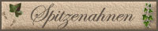

|





 |
ONOMASTIK - Namenskunde

Eine kleine Einführung in die Namenkunde
Die folgende kurze Einführung möchte nur als knappe und keineswegs
vollständige Übersicht zum Thema Familiennamen und Namenkunde verstanden
werden. Eine umfassende Darstellung würde hier gewiß den Rahmen sprengen.
Wer näher in diese Materie einsteigen möchte, der sei auf entsprechend
vorhandene Literatur verwiesen (siehe Punkt 4).
1. Die Entstehung der Familiennamen im deutschsprachigen Raum
Unsere Namen stellen beinahe immer die älteste Überlieferung einer
Familiengeschichte dar. Die Wurzeln der deutschen Familiennamen reichen
oft bis ins Mittelalter zurück und entstanden damit in einer Zeit, in der
die meisten Menschen weder Lesen noch Schreiben konnten. Die große Masse
deutscher Familiennamen entstand in der Zeit des 14. bis 16. Jahrhunderts.
Bis zum Ende des 11. Jahrhunderts gaben sich die Menschen lediglich einen
Rufnamen. Da damals auf dem Land nur wenige Menschen in kleinen und
verstreuten Siedlungen lebten, war dieser eine Rufname auch völlig
ausreichend, um den Träger des Namens eindeutig zu bestimmen.
Erst mit anwachsender Bevölkerungszahl, dem zunehmenden Handel, erhöhter
Mobilität, der Entstehung größerer Ortschaften und Städte und nicht
zuletzt durch die aufkommende Verwaltung von Staat und Kirche, wurde ein
differenzierteres Namensystem nötig, um eine genaue
Personenidentifizierung überhaupt möglich zu machen. Daher fügte man seit
dem 12. Jahrhundert zu dem bestehenden Rufnamen einen Beinamen hinzu,
welcher als Grundlage für den späteren Familiennamen angesehen werden
kann.
Familiennamen entstanden schließlich, wenn ein Beiname einer Person auf
deren Nachkommen übertragen (vererbt) wurde. Dies war besonders für
Verwaltungszwecke - zum Beispiel Erbschaftsangelegenheiten - wichtig, da
Familiennamen nun verwandtschaftliche Beziehungen deutlich machten.
Beachtet werden muß jedoch, dass sich anfangs die Familiennamen noch
gänzlich ändern konnten, beispielsweise wenn sich der Beruf oder Wohnort
des Namensträgers änderte oder gar wenn dieser mit seinem Namen nicht mehr
einverstanden war. Erst im 15. Jahrhundert wird die kontinuierliche
Verwendung des gleichen Familiennamens deutlich. Erst mit dem
Inkrafttreten des Bürgerlichen Gesetzbuches am 1. Januar 1900, ist eine
Änderung der Namensschreibung in Deutschland nur noch auf dem
Rechtswege unter bestimmten Umständen möglich.
2. Wie lassen sich Familiennamen einteilen?
Im Wesentlichen gibt es fünf Kategorien, in die sich unsere Familiennamen
einteilen lassen: In Patronyme/Metronyme, Herkunftsnamen,
Wohnstättennamen, Berufsnamen und Übernamen. Hier der Versuch einer
Einteilung in Listenform (die keinen Anspruch auf Vollständigkeit erhebt):
I. Familiennamen aus Rufnamen
- Patronyme ("Vatername")
- Vater
- Schwiegervater
- Bruder
- Onkel
- Metronyme ("Muttername")
- Mutter
- Gattin
- Schutzpatronin
II. Herkunftsnamen
- Völker
- Länder
- Stämme
- Regionen
- Ortschaften
III. Wohnstättennamen
- Hofnamen
- Häusernamen
- Landschaft
- Geländeformen (Erhebung, Ebene, Vertiefung)
- Bodenbeschaffenheit
- Lichtverhältnisse
- Geländelage
- Bewuchs (Bäume, Büsche, Wiesen, Äcker, etc.)
- Gewässer
- Bauten, Bauwerke
- Grenzen
- Wege
IV. Berufsnamen
- direkte Berufsnamen
- Gewerbe
- Ämter
- Aufgaben
- indirekte Berufsnamen (Berufs-Übername)
- Werkzeug
- Material
- Tätigkeit
- (Arbeits-)Kleidung
- Produkt/Ware
V. Übernamen
- Körperliche Merkmale
- Geistige Merkmale und Charakter
- Verhaltensweisen und Gewohnheiten
- Biographie/Lebensgeschichte
- Materielle Objekte (Pflanzen, Tiere, Gegenstände, Gestirne, etc.)
- Ereignisse und Zeiten (Naturerscheinungen, Jahreszeiten, Monate,
etc.)
- Besitz- und Reichtum
- Abstammung, Verwandtschaft
- Kirche und Glaube
- Würdenträger
2.1 Familiennamen aus Rufnamen
Hierbei wurde der Rufname des Vaters oder - seltener - der Mutter von der
nächsten Generation als Familienname übernommen. Man spricht dann von
einem
Patronym bzw. Metronym. Dabei muß aber nicht zwangsläufig der
Rufname des Vaters bzw. der Mutter zum Familiennamen geworden sein - es
gibt auch Fälle, bei denen der Name auf den Rufnamen eines anderen
Verwandten, eines Patron oder Dienstherrn zurückgeführt werden kann.
2.2 Herkunftsnamen
Familiennamen dieser Kategorie, erhielten praktisch fast nur zugezogene
Menschen an ihrem neuen Wohnort. Ursprünglich dienten noch Umschreibungen,
wie beispielsweise "Hubert von Oberhausen", zur besseren Unterscheidung
der Menschen. Ab der Zeit, als die von der Herkunft abgeleiteten Beinamen,
schließlich zu Familiennamen wurden, läßt sich der Trend erkennen, dass
Präpositionen wie "aus" und "von" mehr und mehr weggelassen wurden.
Bereits im 14./15. Jahrhundert überwiegen schließlich Herkunftsnamen, ohne
Präpositionen. Herkunftsnamen wurden nicht nur aus Ortsnamen geschöpft
sondern auch aus den Namen und Bezeichnungen von Ländern, Völkern, Stämmen
und Regionen.
2.3 Wohnstättennamen
Im Gegensatz zu den Herkunftsnamen wurden Wohnstättennamen vom Wohnsitz
einheimischer Menschen abgeleitet. Sehr häufig gehen Wohnstättennamen auf
die Landschaftsbeschaffenheit in der Umgebung zurück.
2.4 Berufsnamen
Hierbei läßt sich weiter unterscheiden, ob der Benannte den Beruf ausübte
(direkter Berufsname), oder er nach einer bestimmten Eigenheit seines
Berufes bezeichnet wurde (indirekter Berufsname). Bei den indirekten
Berufsnamen konnte beispielsweise das verwendete Werkzeug, (hergestellte,
verarbeitete oder gehandelte) Produkt, ein charakteristischer
Arbeitsvorgang oder eine berufstypische Kleidung zur Bildung herangezogen
werden. Daneben kann man in diese Kategorie auch Bezeichnungen aufnehmen,
die vom Stand oder Amt der Person abgeleitet wurden.
2.5 Übernamen
Ein weites Feld stellen die so genannten Übernamen dar. Hierher gehören
vor allem spezielle, einen Menschen kennzeichnende Eigenschaften, die zur
Namensbildung herangezogen wurden. So haben sich u. a. das körperliche
Erscheinungsbild, charakterliche Eigenschaften, Wesensarten,
Lebensereignisse oder Gewohnheiten in derartigen deutschen Familiennamen
niedergeschlagen.
3. Namenssuffixe
Da es eine Vielzahl von Namensendungen gibt und eine umfangreiche
Behandlung hier den Rahmen sprengen würde, möchte ich lediglich auf den
dtv-Atlas Namenkunde sowie folgende Seiten verweisen:
4. Welche Bücher beschäftigen sich mit der Namenkunde?
- "Das grosse Buch der Familiennamen" von Horst Naumann
- "Deutsche Namenkunde" von Max Gottschald
- "Deutsches Namenlexikon" von Hans Bahlow
- "dtv-Atlas Namenkunde" von Konrad Kunze
- "Duden - Familiennamen", Dudenverlag
- "Etymologisches Wörterbuch der Deutschen Familiennamen, von J.
Brechenmacher"
(Die alphabetische Auflistung erhebt keinen Anspruch auf
Vollständigkeit.)
Weitere Literaturverzeichnisse finden sich u. a. im dtv-Atlas Namenkunde.
Im "Taschenbuch für Familiengeschichtsforschung" (12. Auflage) findet sich
auf den Seiten von 478 bis 488 ein eigenes Kapitel zur Namenkunde und ein
ebenfalls umfangreiches Literaturverzeichnis.
5. Weiterführende Webseiten
I. Vornamen
II. Nachnamen
III. Allgemeines
Hier geht's weiter zur
FAQ für den Forenbereich "Namenforschung".


|